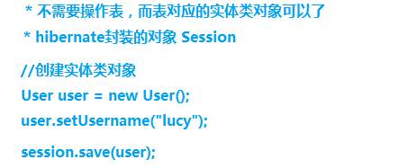

一、是什么？ hibernate框架应用在javaee三层结构中 dao层框架
hibernate底层代码就是jdbc，hibernate对jdbc进行封装，使用hibernate好处，不需要写复杂jdbc代码了，
开源的轻量级的框架
ORM思想 orm：object relational mapping，对象关系映射

入门 搭建一个demo 1、使用IDEA创建一个Maven工程 添加依赖
1 2 3 4 5 6 7 8 9 10 11 12 13 14 15 16 17 18 19 20 21 22 23 24 25 26 <dependency > <groupId > org.hibernate</groupId > <artifactId > hibernate-core</artifactId > <version > 5.5.0.Final</version > </dependency > <dependency > <groupId > mysql</groupId > <artifactId > mysql-connector-java</artifactId > <version > 8.0.16</version > </dependency > <dependency > <groupId > log4j</groupId > <artifactId > log4j</artifactId > <version > 1.2.17</version > </dependency > <dependency > <groupId > junit</groupId > <artifactId > junit</artifactId > <version > 4.13.1</version > <scope > test</scope > </dependency >
解决编译时资源文件不生效的问题：
1 2 3 4 5 6 7 8 9 10 11 <build > <resources > <resource > <directory > src/main/java</directory > <includes > <include > **/*.xml</include > </includes > </resource > </resources > </build >
2、写个实体类 1 2 3 4 5 6 7 8 9 10 11 12 13 14 15 16 17 18 19 20 21 22 23 24 25 26 27 28 29 30 31 32 33 34 35 36 37 38 public class User private int uid; private String username; private String password; public User (int uid, String username, String password) this .uid = uid; this .username = username; this .password = password; } public User () } public int getUid () return uid; } public void setUid (int uid) this .uid = uid; } public String getUsername () return username; } public void setUsername (String username) this .username = username; } public String getPassword () return password; } public void setPassword (String password) this .password = password; } }
3、写实体类对应的配置文件 建议：在实体类所在包里面创建，实体类名称.hbm.xml
1 2 3 4 5 6 7 8 9 10 11 12 13 14 15 16 17 18 19 20 21 22 23 24 25 <?xml version="1.0"?> <!DOCTYPE hibernate-mapping PUBLIC "-//Hibernate/Hibernate Mapping DTD 3.0//EN" "http://www.hibernate.org/dtd/hibernate-mapping-3.0.dtd" > <hibernate-mapping package ="com.tcmyxc.dao" > <class name ="User" table ="t_user" > <id name ="uid" column ="uid" > <generator class ="native" /> </id > <property name ="username" /> <property name ="password" /> </class > </hibernate-mapping >
4、创建hibernate的核心配置文件 名字是固定的：hibernate.cfg.xml
1 2 3 4 5 6 7 8 9 10 11 12 13 14 15 16 17 18 19 20 21 22 23 24 25 26 27 28 29 30 31 32 33 34 35 36 37 38 39 40 41 42 43 <?xml version='1.0' encoding='utf-8'?> <!DOCTYPE hibernate-configuration PUBLIC "-//Hibernate/Hibernate Configuration DTD 3.0//EN" "http://www.hibernate.org/dtd/hibernate-configuration-3.0.dtd" > <hibernate-configuration > <session-factory > <property name ="connection.driver_class" > com.mysql.cj.jdbc.Driver</property > <property name ="connection.url" > jdbc:mysql:///mytest?serverTimezone=UTC</property > <property name ="connection.username" > root</property > <property name ="connection.password" > 123456</property > <property name ="connection.pool_size" > 1</property > <property name ="dialect" > org.hibernate.dialect.MySQL8Dialect</property > <property name ="show_sql" > true</property > <property name ="format_sql" > true</property > <property name ="hbm2ddl.auto" > update</property > <mapping resource ="com/tcmyxc/dao/User.hbm.xml" /> </session-factory > </hibernate-configuration >
5、测试 第一步 加载hibernate核心配置文件
第二步 创建SessionFactory对象
第三步 使用SessionFactory创建session对象
第四步 开启事务
第五步 写具体逻辑 crud操作
第六步 提交事务
第七步 关闭资源
1 2 3 4 5 6 7 8 9 10 11 12 13 14 15 16 17 18 19 20 @Test public void testAdd () Configuration cfg = new Configuration(); cfg.configure(); SessionFactory sessionFactory = cfg.buildSessionFactory(); Session session = sessionFactory.openSession(); Transaction transaction = session.beginTransaction(); User user = new User(); user.setUsername("xwx" ); user.setPassword("123456" ); session.save(user); transaction.commit(); session.close(); }
Hibernate核心api Configuration 找到名称hibernate.cfg.xml配置文件，创建对象，把配置文件放到对象里面（加载核心配置文件）
SessionFactory 1 使用configuration对象创建sessionFactory对象
根据核心配置文件中，有数据库配置，有映射文件部分，到数据库里面根据映射关系把表创建
2 创建sessionFactory过程中，这个过程特别耗资源的
3 具体实现
1 2 3 4 5 6 7 8 9 10 11 12 13 14 15 16 17 public class SessionFactoryUtil private static Configuration cfg = null ; private static SessionFactory sessionFactory = null ; static { cfg = new Configuration(); cfg.configure(); sessionFactory = cfg.buildSessionFactory(); } public static SessionFactory getSessionFactory () return sessionFactory; } }
Session 1 session类似于jdbc中connection
2 调用session里面不同的方法实现crud操作
3 session对象单线程对象
增删改查那些事 Hibernate实体类编写规则 1 实体类里面属性私有的
2 私有属性使用公开的set和get方法操作
3 要求实体类有属性作为唯一值（一般使用id值）
4 实体类属性建议不使用基本数据类型，使用基本数据类型对应的包装类
int – Integer
char—Character、
其他的都是首字母大写 比如 double – Double
比如学生得了0分 ，int score = 0;
如果表示学生没有参加考试，int score = 0;不能准确表示学生是否参加考试
解决：使用包装类可以了， Integer score = 0，表示学生得了0分，表示学生没有参加考试，Integer score = null;
主键生成策略
1 2 <generator class ="native" />
查询操作 根据 id 查询
1 2 User user = session.get(User.class, 2 ); System.out.println(user);
修改操作 1 2 3 4 5 6 User user = session.get(User.class, 2 ); System.out.println(user); user.setPassword("nihao" ); session.update(user); User user2 = session.get(User.class, 2 ); System.out.println(user2);
删除操作 1 2 3 4 5 6 User user = session.get(User.class, 2 ); System.out.println(user); session.delete(user); User user2 = session.get(User.class, 2 ); System.out.println(user2);
其他的概念 实体类对象状态 实体类状态有三种
（1）瞬时态：对象里面没有id值，对象与session没有关联
（2）持久态：对象里面有id值，对象与session关联
（3）托管态：对象有id值，对象与session没有关联
saveOrUpdate方法：实现添加、实现修改
缓存 hibernate缓存特点：
第一类 hibernate的一级缓存
（1）hibernate的一级缓存默认打开的
（2）hibernate的一级缓存使用范围，是session范围，从session创建到session关闭范围
（3）hibernate的一级缓存中，存储数据必须 持久态数据
第二类 hibernate的二级缓存
（1）目前已经不使用了，替代技术 redis
（2）二级缓存默认不是打开的，需要配置
（3）二级缓存使用范围，是sessionFactory范围
事务代码规范写法 代码结构
1 2 3 4 5 6 7 8 9 10 11 12 13 14 15 16 17 18 19 20 21 22 23 24 25 26 27 28 29 30 31 32 33 try { 开启事务 提交事务}catch () { 回滚事务}finally { 关闭}@Test public void testTx () SessionFactory sessionFactory = null ; Session session = null ; Transaction tx = null ; try { sessionFactory = HibernateUtils.getSessionFactory(); session = sessionFactory.openSession(); tx = session.beginTransaction(); User user = new User(); user.setUsername("小马" ); user.setPassword("250" ); user.setAddress("美国" ); session.save(user); int i = 10 /0 ; tx.commit(); }catch (Exception e) { e.printStackTrace(); tx.rollback(); }finally { session.close(); sessionFactory.close(); } }
回顾表和表之间的关系 一对多：分类和商品关系，一个分类里面有多个商品，一个商品只能属于一个分类
多对多：订单和商品关系，一个订单里面有多个商品，一个商品属于多个订单
多对多建表：创建第三张表维护关系
查询方式介绍 对象导航查询 （1）根据id查询某个客户，再查询这个客户里面所有的联系人
OID查询 （1）根据id查询某一条记录，返回对象
HQL查询 HQL，即hibernate query language，hibernate提供一种查询语言，hql语言和普通sql很相似
区别：普通sql操作数据库表和字段，hql操作实体类和属性
常用的hql语句
（1）查询所有： from 实体类名称
（2）条件查询： from 实体类名称 where 属性名称=?
（3）排序查询： from 实体类名称 order by 实体类属性名称 asc/desc
使用hql查询操作时候，使用Query对象
（1）创建Query对象，写hql语句
（2）调用query对象里面的方法得到结果
查询所有
条件查询
分页查询 在hql操作中，在语句里面不能写limit，hibernate的Query对象封装两个方法实现分页操作
投影查询 投影查询：查询不是所有字段值，而是部分字段的值
投影查询hql语句写法：
（1）select 实体类属性名称1, 实体类属性名称2 from 实体类名称
（2）select 后面不能写 * ，不支持的
具体实现：
QBC查询 1、使用hql查询需要写hql语句实现，但是使用qbc时候，不需要写语句了，使用方法实现
2、使用qbc时候，操作实体类和属性
3、使用qbc，使用Criteria对象实现
查询所有
条件查询
分页查询
统计查询
本地sql查询 SQLQuery对象，使用普通sql实现查询
servlet调用service，service调用dao
（1）在dao里面对数据库crud操作
多表查询 迫切内连接
（1）迫切内连接和内连接底层实现一样的
（2）区别：使用内连接返回list中每部分是数组，迫切内连接返回list每部分是对象
（3）hql语句写法：from Customer c inner join fetch c.setLinkMan
检索策略 检索策略分为两类：
（1）立即查询：根据id查询，调用get方法，一调用get方法马上发送语句查询数据库
（2）延迟查询：根据id查询，还有load方法，调用load方法不会马上发送语句查询数据，只有得到对象里面的值时候才会发送语句查询数据库
延迟查询分成两类：
（1）类级别延迟：根据id查询返回实体类对象，调用load方法不会马上发送语句
（2）关联级别延迟：查询某个客户，再查询这个客户的所有联系人，查询客户的所有联系人的过程是否需要延迟，这个过程称为关联级别延迟
批量抓取
查询所有的客户，返回list集合，遍历list集合，得到每个客户，得到每个客户的所有联系人
在客户的映射文件中，set标签配置 batch-size值，值越大发送语句越少